私がマインクラフトで製作したウースター級軽巡を例に、 船（主に軍艦）の砲塔、砲身、及び射撃指揮装置の可動化、IKによる砲塔と砲身の制御、更にレーダーの動きと船の揺れといったアニメーションのためのリグを組む手順をstep-by-stepで解説します。
最終的に、アニメーションする海での撮影と、航跡の動きと連動する設定も行い、映像制作に活用することを目指します。
今回、第一回は砲塔、砲身、及び射撃指揮装置の可動化、（将来的にIKによる砲塔と砲身の制御も）を解説します。
なお、Blenderの操作に習熟されている方は、各見出しの最初のリストを見るだけで手順を把握して頂けます。
船はY軸に向いている前提で解説しますので、X軸の場合は適宜読み替えてください。
概念の説明
船のメッシュオブジェクトに対して、Armatureを用いて可動化します。
まず、船のオブジェクトを船体、砲塔、砲身に三分割し、それぞれを一つのArmatureに紐づけます。最後にArmatureにIKをセットアップし、ターゲットボーンを動かすことで砲身を指向できるようにします。
船の揺れや移動はArmatureオブジェクトのトランスフォームを用いる方法と、RootボーンのDeformを利用する方法が考えられますが、今回は船内のライトオブジェクトやカメラオブジェクトを一緒に動かすため前者を利用します。
船のモデルの準備
マインクラフトの作品をobj形式でBlenderにインポートする方法は以前の記事で解説しています。 また、その前の準備としてMCEditを用いて作品を別のワールドにコピーする方法も解説しています。
Minecraft内で予め可動パーツを分割しておくとBlender上で作業しやすいでしょう。分割作業にはMCEdit等のソフトを利用できます。
クリックで元のサイズの画像を表示します{kind=link}
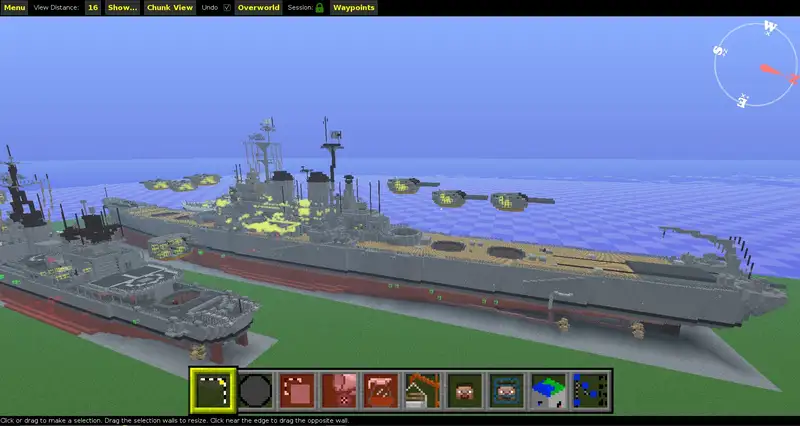
船（メッシュオブジェクト）とArmatureの用意
船のモデルインポートし、そのMesh ObjectとArmatureを準備します。
- メッシュオブジェクトをインポート
- Armatureオブジェクトと最初のボーンを追加
- 両オブジェクトを原点に移動
- 両オブジェクトとMeshデータ、並びにArmatureデータに船の名前を命名
操作：船のモデルをインポートする
船（メッシュオブジェクト）をインポートします。すでにあるリグ利用するなら、メッシュオブジェクトだけをXキーで消しておきます。
クリックで元のサイズの画像を表示します{kind=link}
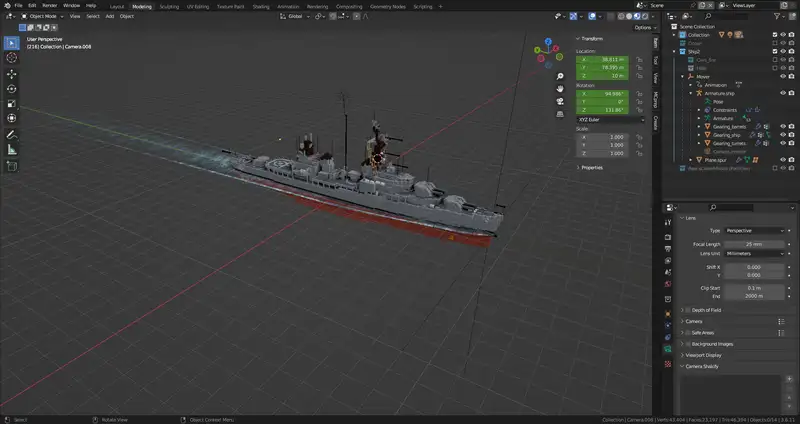
まずblenderを開き、キューブを削除して、File > Import > Wavefront (.obj)と進んで、objファイルを選択します。
{kind=link}
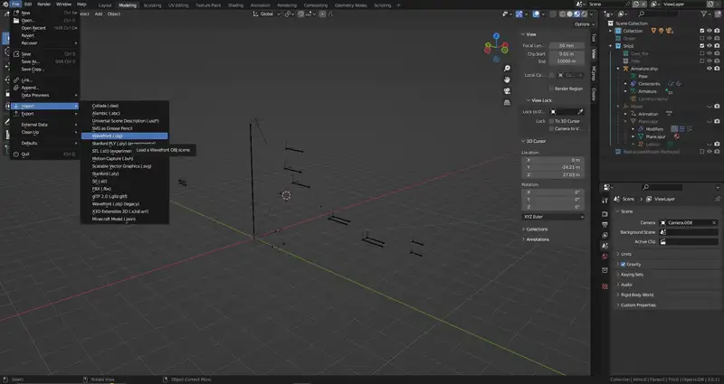
{kind=link}
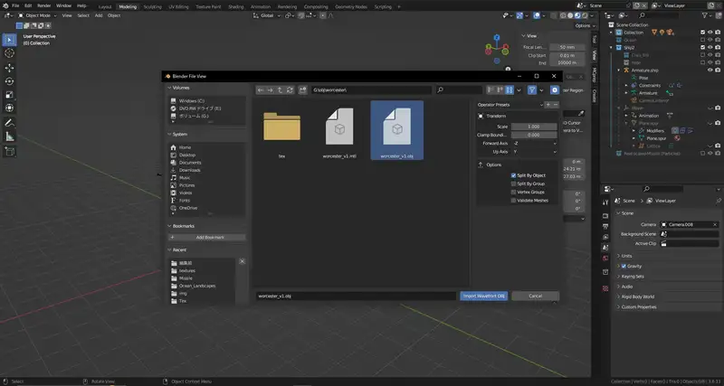
インポートした船が原点にない場合は、alt + Gで原点に移動させます。
オブジェクト名とメッシュ名を船の名前にします。 オブジェクト名はアウトライナー上でダブルクリック、メッシュ名はObject Data Propertiesの一番上の欄で変更できます。 今回はWorcesterとしました。
{kind=link}
操作：Armatureオブジェクトを追加
次にshift+AでArmatureオブジェクトを追加します。すると最初のボーンが出現します。
小さすぎる場合は、ボーンのTail側を選択してGZで真上に移動させます。だいたい船のマストくらいの高さにするとよいでしょう。また、Headを原点においてください。
すでにArmatureを用意している場合は親子関係をクリアして原点に移動させます。画像は親子関係をクリアしているところです。
{kind=link}
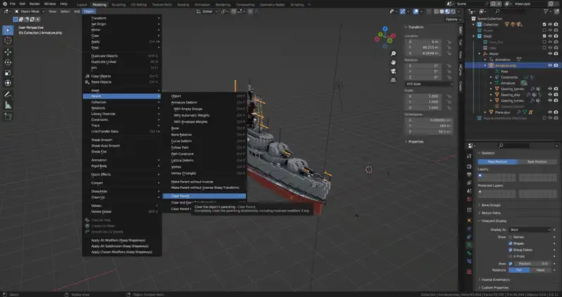
Armatureもオブジェクトとデータのそれぞれに命名します。今回はArmature.worcesterとしました。
また、見やすくするためにVewport Display > Display As: Stickに、Show: In Frontにチェックを入れて置きました。
船（メッシュオブジェクト）のパーツ分け
後の頂点ウェイトの適用を操作しやすくするため、船のメッシュオブジェクトを可動範囲に基づいて三分割します。
- 全ての砲塔と、射撃指揮装置やレーダー等の可動パーツ（以下、砲塔類）を船体のオブジェクトから分離
- 砲身を砲塔から分離
- 砲塔類は砲塔類で、砲身は砲身でオブジェクトをまとめる
- 砲塔と砲身が浮いている場合は、正しい位置に移動させる（原点は船体と同じ0, 0, 0に）
- 原点がずれているので、原点が船体中央に来るように調節する。
操作：砲塔と砲身を分離
可動パーツである、砲塔と射撃指揮装置等を船体から分離します。
船のオブジェクトを選択してTabキーで編集モードに入ります。
範囲選択を駆使し、砲塔を選んだあと右クリックSeparate（分離）> Selectionをクリック
選択するときは、テンキーの3又は画面右上のXYZのXをクリックして横からの視点にし、Viewport DisplayをWireframeに、Toggle X-RayをONに、そして3キーで面選択モードにするとやりやすいと思います。
また、無理に一度に分離する必要は無く、いくつかに分離してから結合することもできます。 オブジェクトモードで、結合したいオブジェクトを全てShift + クリックで選択し、 最後に結合先となるオブジェクトをShift + クリックで選択してCtrl + Jで結合できます。
測距儀等の可動パーツも砲塔と同様に分離し、一個のオブジェクトに結合します。今回はこのオブジェクトにWorcester.Turretと命名しました。
{kind=link}
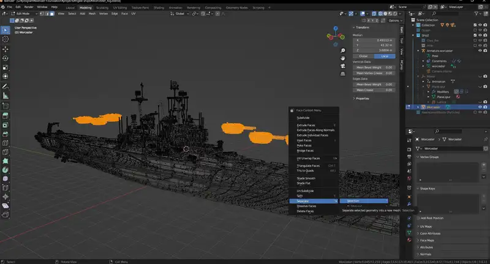
更に、分離した砲塔から、砲身を分離します。
砲塔のオブジェクトを選択して編集モードに入り、砲身を先ほどと同様の操作で分離します。
今度は、Toggle X-RayをOFFに、面選択モードにすると選択しやすいですよ。
オブジェクトはまた砲身同士をまとめ、今回はWorcester.barrelと命名しました。
{kind=link}
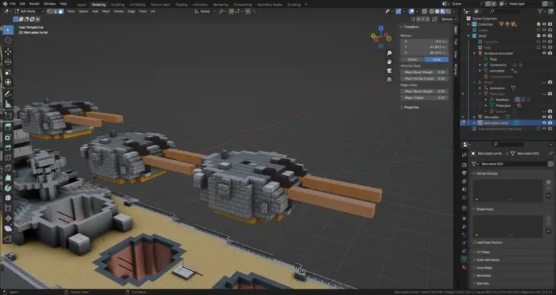
{kind=link}
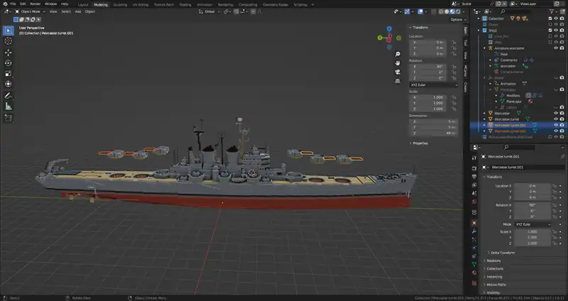
操作：砲塔をもとの位置に戻す
砲塔を浮かせている場合は、それらをもとの位置に戻します。
砲塔オブジェクトを選択して編集モードに入り、砲塔を範囲選択してからGZでだいたいの位置を調節します
{kind=link}
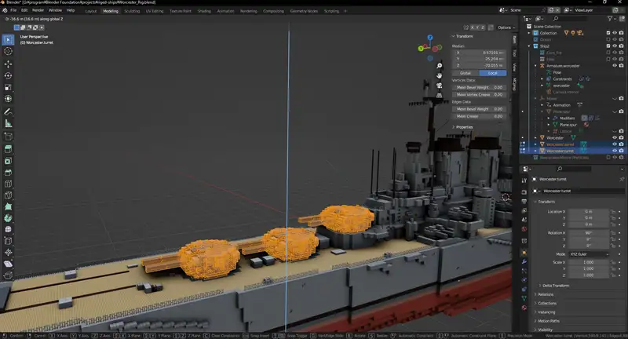
すると画面左下にMove（移動）と書かれたメニューが出現するので、そのZの数字に整数を入力し、微調節してください。
{kind=link}
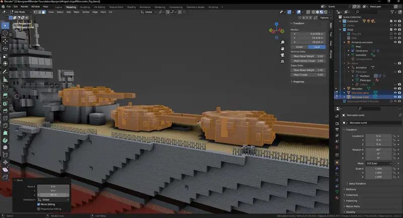
{kind=link}
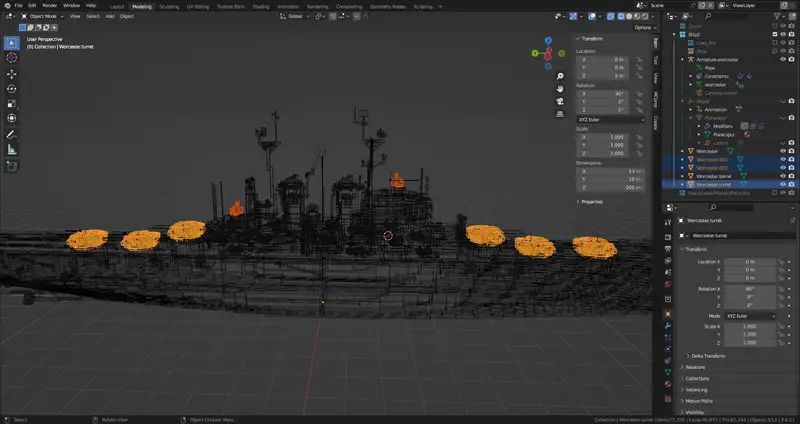
操作：原点が船体中央に来るように調節
おそらく、三分割した船のモデル全ての原点がすこしだけ左右にずれているはずです。
{kind=link}
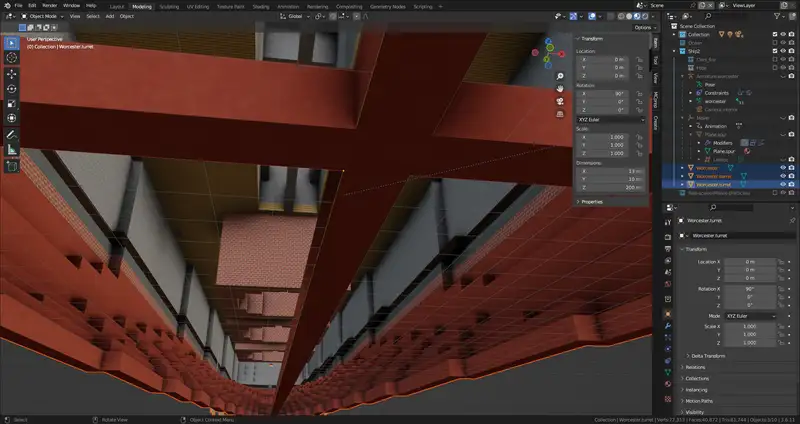
これを修正します。
三つのオブジェクトを全て選択して編集モードに入り、Aキーで全選択してGXと入力して移動、 画面左下にMove（移動）と書かれたメニューが出現するので、そXの数字に0.5又は-0.5を入力し、微調節してください。
{kind=link}
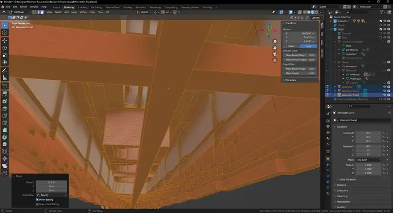
ボーンを組み上げる
可動パーツの数に応じてボーンを組み上げます。
- 最初のボーンにrootと命名
- rootからオフセットを維持した子ボーンをいずれかの砲塔のだいたいの位置に追加
- 砲身のだいたいの位置に孫ボーンを追加
- 砲塔ボーンと砲身ボーンに命名
- 砲塔ボーンと砲身ボーンを砲塔の数だけ複製
- レーダー、射撃指揮装置、IKターゲットのボーンもだいたいの位置に追加しrootの子ボーンに
- 横からの視点にし、スナップを使ってボーンの位置を微調節
- 全てのボーンのxの位置を0にする
- 砲塔と砲身のRollを調節してX軸の周りに回転するように
操作：だいたいの位置にボーンを追加する
アーマチュアオブジェクトを選択すると、最初のボーンが真上に向かって追加されています。このボーンにRootと命名します。
編集モードに入り、ボーンを選択し、Bone Propertiesの一番上にある欄にRootと入力します
{kind=link}
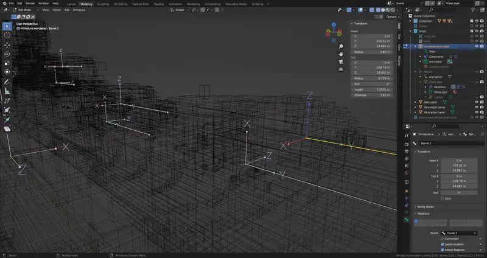
ボーンが小さすぎますので、ボーンの上の丸（Tail）を選択し、G>Zで上に伸ばします。スケールを変更しないでください。
再びTailを選択し、G>Yで前方に伸ばします。
{kind=link}
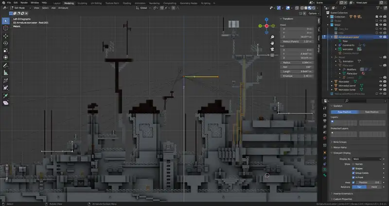
このボーンを移動させるとRootがついてきてしまうので、一度Yキーで親子関係を解消します。そのあと砲塔のだいたいの位置に移動させます。
親子関係を回復します。子ボーン>Rootの順に選択し、Ctrl+P>Keep Offsetです。RootのTailから子ボーンのHeadに向かって点線が伸びるはずです。
砲身のボーンを追加します。砲塔のボーンを選択し、Shift+Dで複製してだいたいの位置に移動させます。 このままでは砲身がRootの子ボーンになってしまいますので、砲身のボーン>砲塔のボーンの順に選択して、Ctrl+PKeep Offsetです。 砲塔のTailから砲身のHeadに向かって点線が伸びるはずです。
砲塔をturretと、砲身をbarrelと命名します。
こうして作った砲塔と砲身のセットを、Shift+Dで砲塔の数だけ複製します。
以上の事を船体の前後で行い、最後にレーダー、射撃指揮装置などの可動部品にもボーンを作成します。毎回Ctrl+P、Keep Offsetと入力するのは面倒ですので砲塔の物をコピーして砲身を削除して流用すると良いでしょう。
また、船体の前後に一個ずつIKターゲット用のボーンも追加しておきます。
操作：ボーン位置の微調節
だいたいの位置に配置したボーンを正しい位置に移動させます。
テンキーの3、又は3Dビューポート右上のXYZ（プリセットビューポイント）のXをクリックして真横からの視点に変えておきます。
続いてスナップを有効にします。画面上の磁石のマークをクリックし、その横のメニューを開いてSnap to > Edge Centerにします
準備が整いましたので、移動させます。
まず高さを調節します。ボーンを選択し、G>Zと入力してカーソルを動かし、砲塔は砲塔の根元に、砲身は砲身の中央に、それぞれ高さを合わせます。
水平位置を調節します。G>Yと入力して、砲塔、及び砲身それぞれの回転軸に位置を合わせます。レーダー、射撃指揮装置などの可動部品も同じようにします。
ボーンを選択するとき、真ん中あたりをクリックするとボーン全体が、両端をクリックすると両端だけが選択されますので状況に応じて使い分けてください。
また、ボーンの長さは変形に関係しませんが、だいたいすべてのボーンが同じくらいの長さになるようにしないとポーズモードで動かしたときに震えたようになる現象が発生します。
最後に、スナップしたときに左右の位置が若干ずれますので、全てのボーンを首尾線上に並列させます。
全てのボーンを選択し、サイドバーのHead: X、Tail: X、の数値に0を入力し、 それぞれを右クリックして、Copy Single to Selectedを行います。 これで全てのボーンのX軸が0になったはずです。
操作：ボーンのRollの調節
ボーンを、常にX軸周りに回転させるように向きを調節します。砲塔ならX軸が鉛直に、砲身ならX軸が横向きに、という具合にです。これをすることでこの後のIKの設定がやりやすくなります。
砲塔類のボーンを選択し、サイドバーのRollに角度を入力します。続いて砲身のボーンを選択し、サイドバーのRollに角度を入力します。
船がYの負の方向を向いている時はそれぞれ90度、180度、270度等の数値にすると良いはずですが、場合によって異なるようです。
ウェイトの割り当て
モデルにボーンへのウェイトを設定します。
- 船体のオブジェクト3つをArmatureオブジェクトに対してParent (Armature Deform with Empty Groupes) で親子付ける
- 各パーツに然るべきボーンに対するウェイトを1設定する
操作：親子付ける
アウトライナー上で、船体、砲塔類、砲身の三つのオブジェクトをCtrlを押しながらクリックして、 最後にアーマチュアオブジェクトを選択、アーマチュアオブジェクトが明るいオレンジ色になっていることを確認してCtrl+P>Armature Deform With Empty Groupes とクリックします。
操作：ウェイトを設定する
ウェイトとは、モデルの全ての頂点に対して、各ボーンへの追従の量を設定する工程です。
全ての頂点と申し上げましたが、実際にはボーンの数と同じ数の頂点グループがすでに用意されていますので、そこに頂点を振り分けてからウェイトの数値もグループに対して設定します。
まず、船体をRootボーンに割り当てます。
船体のオブジェクトを選択し、編集モードに入ってAで全選択します。
次に画面右下（Propaties）の緑の三角タブ（Object Data Properties）をクリックし、Vertex Groupesの欄のアコーディオンを開いておきます。
頂点グループ一覧の一番上にRootがあると思うので、それを選択してWeightの数字が1.000になっていることを確認してAssignをクリックします。
次は砲塔に設定します。 オブジェクトモードに戻って砲塔のオブジェクトを選択し、編集モードに入ります。 今度は各砲塔ごとに別々の頂点グループに割り振らなければなりません。 ですからまず、1番砲塔を範囲選択し（砲身は選択しません）、"Turret" の頂点グループにAssignします。
同じ作業を砲塔の数だけ行います。2番砲塔以降は"Turret.001"等と命名されているはずです。
最後に砲身です。こちらも同様にします。
最後に
今回の内容だけで、最低限動かせるようになりました。Armatureオブジェクトを選択し、ポーズモードに入って動かしてみてください。
次回はIKを設定して砲身と砲塔を一括で動かせるように設定する他、船そのものの移動と、揺れを実装していきます。